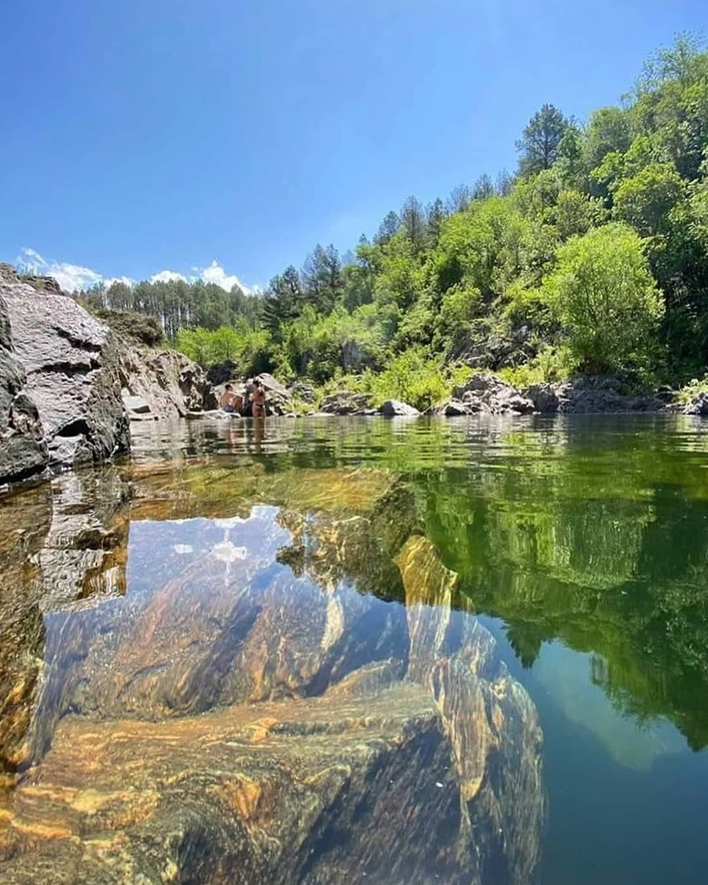

Este rincón paradisíaco está a tan solo 135 kilómetros de Córdoba capital. Es un destino ideal para los viajeros que buscan un lugar donde se privilegia por sobre todo la calma y la paz. El pueblo vive fuera del tiempo y es un lugar ideal para realizar actividades al aire libre.

El pueblo vive fuera del tiempo y es un lugar ideal para realizar actividades al aire libre.
Para información de los turistas, en el Río “El Durazno” se puede practicar la pesca con mosca y señuelos. Este tipo de pesca es con devolución obligatoria. A la noche, el plan es disfrutar de uno de los cielos más estrellados que tiene nuestro país y escuchar a la naturaleza que sigue viva en la oscuridad. En la zona habitan zorros, liebres, tucotucos, comadrejas, armadillos, escuerzos, perdices, zorrinos, patos criollos, jotes, lechuzas, loros, halcones peregrinos y pumas.
